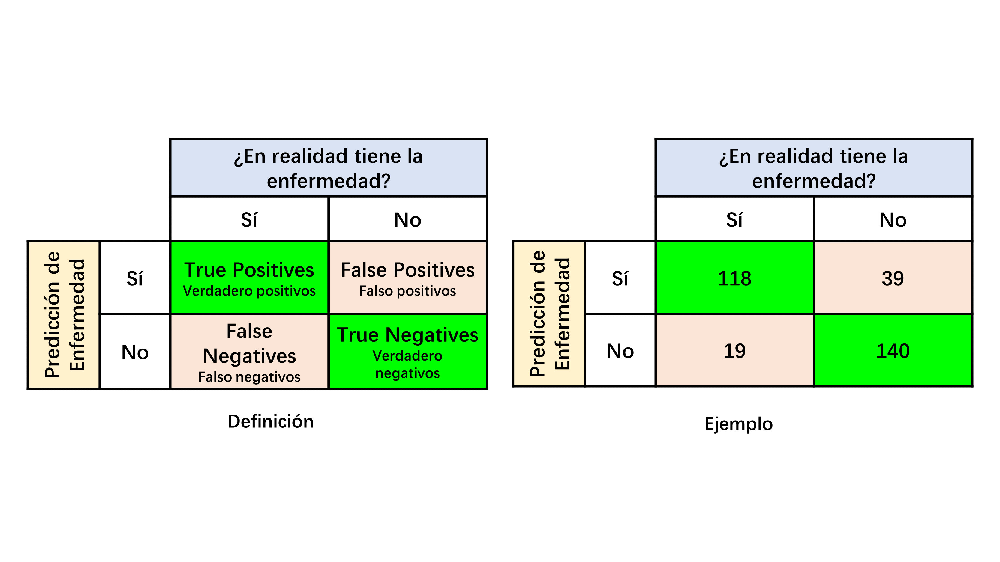

Clasificación (métricas)
Matriz de confusión

Sensitivity (sensitividad)
\[ \text{Sensitivity} = \dfrac{\text{True Positives}} {\text{True Positives + False Negatives}} \]
\[ \text{Sensitivity} = p(\text{Identificado con la enfermedad | Tiene la enfermedad }) \]
Cuando se habla de “identificado con la enfermedad”, esto supone que el modelo ha predicho que tiene la enfermedad.
La sensitividad establece qué % de los pacientes con la enfermedad son correctamente clasificados. En un test médico como el de covid, una alta sensitividad implica que si el paciente tiene covid, el test tiene alta capacidad de detectarlo.
Es la respuesta a la siguiente pregunta:
Si un paciente tiene la enfermedad, ¿cuál es la probabilidad de que sea detectada?
Specificity (especificidad)
\[\text{Specificity} = \dfrac{\text{True Negatives}} {\text{True Negatives + False Positives}}\]
\[\text{Specificity}= p(\text{Identificado sin la enfermedad | No tiene la enfermedad, ie, sano} )\]
La especificidad establece el qué % de los pacientes sanos son correctamente clasificados. En un test médico como el de covid, una alta especificidad implica que si el paciente NO tiene covid, el test tiene una alta capacidad de producir un resultado NEGATIVO.
Es la respuesta a la siguiente pregunta:
Si un paciente está sano, ¿cuál es la probabilidad de que el resultado de la prueba sea NEGATIVO?
Error rate (Tasa de error)
\[ \text{Error rate} = \dfrac{\text{False Positives + False Negatives}}{{n}}\]
La tasa de error es el % de pacientes que son clasificados incorrectamente.
Accuracy
\[ \text{Accuracy} = \dfrac{\text{True Positives + True Negatives}} {n}\]
Es el % de pacientes que son clasificados correctamente.
Precision
\[ \text{Precision} = \dfrac{\text{True Positives}}{\text{True Positives + False Positives}}\]
De los pacientes que fueron clasificados como enfermos, ¿qué % fue clasificado correctamente?
Resumen
| Métrica | Otros nombres | Fórmula | Descripción |
|---|---|---|---|
| Error rate | ES: Tasa de error | \(\dfrac{FP+FN}{n}\) | % de pacientes que son clasificados incorrectamente |
| Accuracy | ES: Precisión | \(\dfrac{TP+TN}{n}\) | % de pacientes que son clasificados correctamente |
| Sensivity | ES: Sensitividad Recall True Positive Rate | \(\dfrac{TP}{TP+FN} = \dfrac{TP}{P}\) | % de pacientes con la enfermedad que son clasificados correctamente |
| Specificity | ES: Especificidad True Negative Rate | \(\dfrac{TN}{FP+TN} = \dfrac{TN}{N}\) | % de pacientes sin la enfermedad (sanos) que son clasificados correctamente |
| Precision | Positive Predicted Value | \(\dfrac{TP}{TP+FP}\) | De los pacientes que fueron clasificados como enfermos, ¿qué % fue clasificado correctamente? |
| Descripción | Definición |
|---|---|
| Total de pacientes | \(n = TP + FP + FN + TN\) |
| Pacientes con la enfermedad | \(P = TP + FN\) |
| Pacientes sin la enfermadad (sanos) | \(N = FP + TN\) |